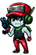
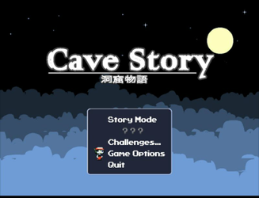
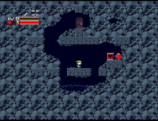
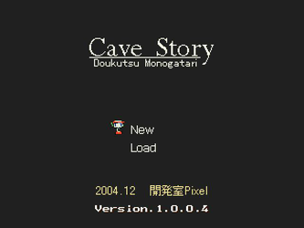
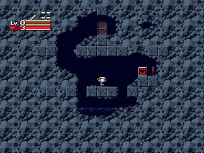

Cave Story+
Dieser Artikel wurde für die folgenden Ubuntu-Versionen getestet:
Ubuntu 14.04 Trusty Tahr
Zum Verständnis dieses Artikels sind folgende Seiten hilfreich:

Cave Story+  ist ein kommerzielles Remake des Spiels Cave Story, welches 2004 als Freeware von Studio Pixel veröffentlicht wurde. Dieses bietet - neben der überarbeiteten Optik und einem neuen Soundtrack - die Möglichkeit das Spiel im Original zu spielen und die neuen Effekte zu deaktivieren. Im Gegensatz zum Original kann die Schwierigkeitsstufe des Spiels angepasst werden.
ist ein kommerzielles Remake des Spiels Cave Story, welches 2004 als Freeware von Studio Pixel veröffentlicht wurde. Dieses bietet - neben der überarbeiteten Optik und einem neuen Soundtrack - die Möglichkeit das Spiel im Original zu spielen und die neuen Effekte zu deaktivieren. Im Gegensatz zum Original kann die Schwierigkeitsstufe des Spiels angepasst werden.
Der Roboter Quote erwacht ohne Erinnerungen in einer unterirdischen Höhle. Kurz darauf entdeckt er ein Dorf, welches von den Mimigas bewohnt wird. Diese werden von dem Doktor (Fuyuhiko Date) verfolgt... Eine Vielzahl von Charakteren, große Höhlen und eine große Anzahl vielfältiger Monster garantieren langen Spielgenuss.
Zu Beginn des Spieles kann man mit dem Roboter lediglich laufen und springen. Durch den Erwerb weiterer Eigenschaften und dem Sammeln von Gegenständen erweitert man sein Repertoire nach und nach.
|  |  |
| Hauptmenü | Remake |
Cave Story+¶
Installation¶
The Humble Indie Bundle #4¶
Das Spiel aus der Aktion The Humble Indie Bundle #4 herunterladen und entpacken [1] z.B. nach ~/Spiele/CaveStory+. Das Spiel kann über CaveStory+ aus dem Installationsverzeichnis heraus gestartet [2] werden.
Auf Wunsch kann man einen Menüeintrag [3] vornehmen.
Desura¶
Das Spiel kann über die Internetseite oder den Client zur Spieleliste hinzugefügt und gestartet werden [4].
Konfiguration¶
Unter dem Menüpunkt "Game Options" kann man das verwendete Design, die Musik und die Lautstärke anpassen. Außerdem kann dort ein Controller entsprechend konfiguriert werden.
|  |  |
| Hauptmenü | Original |
Cave Story¶
Die Originalversion des Spiels steht als Freeware zur Verfügung und kann über eine der folgenden Quellen installiert werden:
Installation¶
cavestory.org¶
Das Spiel von cavestory.org herunterladen und entpacken [1] z.B. nach ~/Spiele/CaveStory. Anschließend das Update herunterladen und ebenfalls entpacken. Die in diesem Ordner enthaltenen Dateien in den Ordner mit den Spieledateien kopieren.
Über doukutsu kann das Spiel gestartet [2] und auf Wunsch ein Menüeintrag [3] vorgenommen werden.
Tastenkürzel¶
| Steuerung | |
| Taste(n) | Beschreibung |
| ↑ | Nach oben schauen. |
| ↓ | Handlung ausführen (z.B. Gespräch führen, Truhe öffnen...) |
| ← + → | Spielfigur bewegen. |
| Z | Sprung / Text durchblättern / Aktion bestätigen |
| X | Schießen / Text durchblättern / Aktion abbrechen. |
| A / S | Waffe wechseln. |
| Q | Gesammelte Gegenstände. |
| W | Karte |
| Esc | Pause / Spiel beenden. |
| F1 | Resume |
| F2 | Reset |

Infobox¶
| Cave Story | |
| Originaltitel: | 洞窟物語 (Dōkutsu Monogatari) |
| Genre: | Adventure |
| Sprache: | |
| Veröffentlichung: | 2004 / 2010 (Remake) |
| Publisher: | Studio Pixel  / Nicalis / Nicalis |
| Systemvoraussetzungen: | - |
| Medien: | Download |
| Strichcode / EAN / GTIN: | - |
| Läuft mit: | nativ |
- Erstellt mit Inyoka
-
 2004 – 2017 ubuntuusers.de • Einige Rechte vorbehalten
2004 – 2017 ubuntuusers.de • Einige Rechte vorbehalten
Lizenz • Kontakt • Datenschutz • Impressum • Serverstatus -
Serverhousing gespendet von